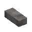

Total Materials Needed
1.22 forge updates
- Bellows — speeds up bloomery smelting
- Metal tongs — 10–100× the durability of wooden tongs while forging
- Steel anvils — now craftable in survival as a higher-tier upgrade
- Quenching & tempering — finished tool heads can be quenched/tempered to boost power or durability (with destruction risk)
- Grinding wheel — sharpen bladed weapons for a crit-damage bonus at a durability cost
Preparation
Construction
Production